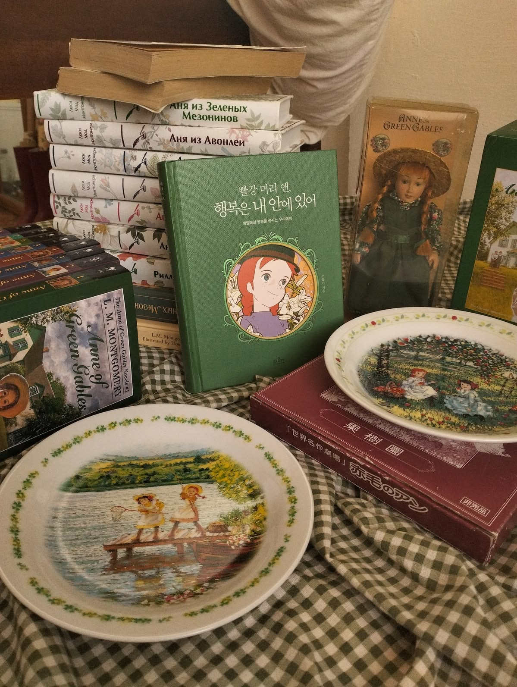

 |
Аня из Зелёных Мезонинов
Люси Мод Монтгомери, 1908 год
История Ани Ширли, разговорчивой рыжеволосой одиннадцатилетней сироты с огромной фантазией и большим сердцем, которая по ошибке попадает в семью Касбертов в Зелёные Мезонины на острове Принца Эдуарда. Сначала Касберты хотят вернуть её обратно, но живой ум, искренность и воображение девочки заставляют их привязаться к ней, и она остается жить в Зелёных Мезонинах.
Серия, состоящая из восьми книг, охватывает всю жизнь Ани - от её детства до замужества и взросления её собственных детей.
И это самая замечательная история, которую я когда-либо читала!
Читать бесплатно онлайн
|